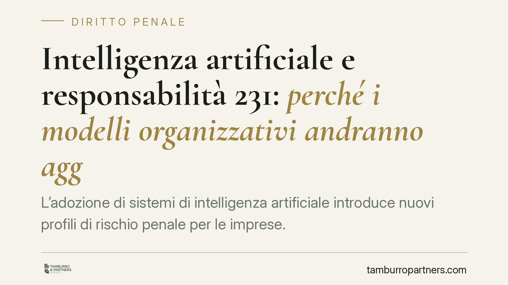

Intelligenza artificiale e responsabilità 231: perché i modelli organizzativi andranno aggiornati
L'adozione di sistemi di intelligenza artificiale introduce nuovi profili di rischio penale per le imprese. Tra il Regolamento UE 2024/1689 (AI Act) e l'evoluzione della normativa interna sulla responsabilità degli enti, i modelli organizzativi ex D.lgs. 231/2001 andranno rivisti. Chi usa l'IA non trasferisce il rischio al fornitore: la responsabilità organizzativa resta in capo all'ente utilizzatore.

Il contesto: IA, rischio d'impresa e responsabilità degli enti
L'uso dell'intelligenza artificiale è entrato stabilmente nei processi aziendali: selezione del personale, analisi del credito, controllo qualità, marketing automatizzato, generazione di contenuti. Ogni automazione sposta decisioni dall'uomo alla macchina, ma non elimina la responsabilità: la riconfigura.
Sul piano penale, il tema interseca il D.lgs. 231/2001, che disciplina la responsabilità amministrativa degli enti per reati commessi nel loro interesse o a loro vantaggio. È un punto da chiarire subito, perché circolano riferimenti normativi non verificabili.
Inquadramento normativo: cosa è vigente e cosa è in evoluzione
Occorre distinguere due piani.
Il piano europeo. Il Regolamento (UE) 2024/1689 (cosiddetto AI Act) è in vigore dal 1° agosto 2024, ma la sua applicazione è scaglionata: i divieti sui sistemi a rischio inaccettabile operano dai primi mesi del 2025, gli obblighi per i modelli di IA per finalità generali a distanza di dodici mesi, e la maggior parte delle disposizioni sui sistemi ad alto rischio a partire dal 2026-2027. Si tratta di una disciplina amministrativa e di prodotto, non penale: impone obblighi di governance, trasparenza e gestione del rischio, con sanzioni proprie.
Il piano penale interno. In Italia è in corso un percorso legislativo di adeguamento ordinamentale all'IA, che contempla l'introduzione di nuove fattispecie di reato e il possibile ampliamento del catalogo dei reati presupposto della responsabilità degli enti. Allo stato, invitiamo alla massima prudenza: non esistono nel codice penale vigente articoli consolidati con numerazione 437-bis o 612-quater dedicati all'IA. L'art. 437 c.p. riguarda la rimozione o omissione dolosa di cautele contro infortuni sul lavoro; gli artt. 612-bis e 612-ter c.p. puniscono rispettivamente gli atti persecutori e la diffusione illecita di immagini sessualmente esplicite. Eventuali nuove fattispecie andranno valutate alla luce del testo definitivo e della data di entrata in vigore fissata dal provvedimento che le introduce. Fino ad allora, nessuna scadenza va presentata come certa.
Resta fermo l'impianto del D.lgs. 231/2001: l'art. 5 fissa il criterio di imputazione — il reato deve essere commesso nell'interesse o a vantaggio dell'ente da soggetti apicali o sottoposti — mentre l'art. 6 prevede l'esimente per l'ente che abbia adottato ed efficacemente attuato un modello organizzativo idoneo a prevenire reati della specie di quello verificatosi.
Implicazioni pratiche: perché l'uso "a valle" genera responsabilità
Il punto decisivo è questo: l'impresa che utilizza un sistema di IA non scarica il rischio penale sul fornitore. La responsabilità ex 231 nasce dalla condotta di una persona fisica legata all'organizzazione dell'ente — amministratore, dirigente, dipendente — quando quella condotta si innesta su una carenza organizzativa.
Se un sistema automatizzato viene usato per realizzare una condotta illecita nell'interesse dell'impresa, o se l'ente non ha predisposto controlli adeguati sull'impiego dello strumento, il nesso tra persona fisica, organizzazione e vantaggio dell'ente può integrare i presupposti della responsabilità amministrativa. Il modello "idoneo" dell'art. 6 è quello che mappa anche questi rischi, non solo quelli tradizionali.
Di conseguenza, un modello organizzativo che ignori l'uso dell'IA rischia di essere valutato come non attuale, e quindi non pienamente idoneo, nel momento in cui le nuove fattispecie diventeranno diritto vigente.
Il ruolo dell'Organismo di Vigilanza
L'OdV dovrà poter monitorare l'adozione e l'impiego dei sistemi di IA. Ciò richiede flussi informativi dedicati: segnalazione dei sistemi in uso, documentazione delle valutazioni di rischio, tracciabilità delle decisioni automatizzate rilevanti. Senza flussi specifici, la vigilanza sull'IA resta sulla carta.
Cosa fare in concreto
- Mappate i sistemi di IA in uso. Censite dove, come e da chi sono impiegati, distinguendo i processi a maggiore impatto (decisioni su persone, sicurezza, dati).
- Classificate il rischio secondo l'AI Act. Verificate se i sistemi rientrano tra quelli ad alto rischio o soggetti a obblighi di trasparenza, e predisponete per tempo la relativa documentazione.
- Aggiornate la parte speciale del modello 231. Integrate la mappatura dei rischi e i protocolli di controllo sull'uso dell'IA, in vista delle nuove fattispecie in corso di definizione.
- Istituite flussi informativi verso l'OdV. Prevedete obblighi di segnalazione e tracciabilità per l'adozione e l'uso dei sistemi.
- Monitorate l'iter normativo. Non ancorate le scelte organizzative a date non ancora confermate: adeguate il modello quando il provvedimento sarà pubblicato, con la relativa disciplina di entrata in vigore.
Disclaimer
Contributo informativo a cura di Tamburro & Partners - Avv. Giuseppe Tamburro. Non costituisce parere legale.
Ogni condominio ha una storia a sé.
Se gestisci un'amministrazione e vuoi un confronto su una specifica questione condominiale, scrivi allo studio. Ti rispondiamo entro un giorno lavorativo.